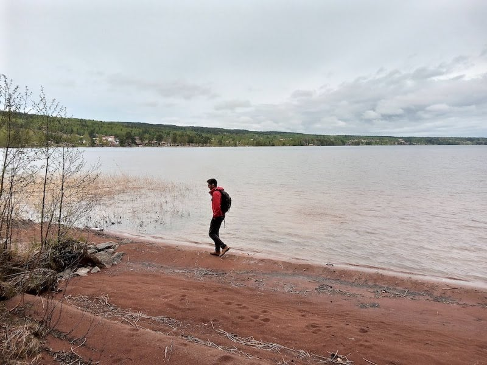

This is my journal, an archive for illustrations, and a playground to learn web development.
I am interested in digital archives, the indie web, visual design history, and accessibility.
I design science communication materials for projects funded by the European Union.
You can reach me at diogo.fm.matias@gmail.com